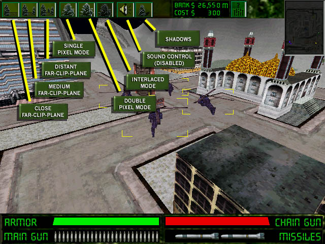

GOLGOTHA DEMO 5 README
- Options -
| The Options Menu
|
The Options Menu can be called up by the Options Menu button shown on the Status Bars and Radar screenshot. This sliding menu gives you several options, should you be running on mortal hardware and need a better framerate.
The far-clip-plane is where the world "stops" when you're in the Action View. The closer you set it, the more paranoid you'll be, but the better the framerate and control when something bad does show up.
The next three options set single-pixel mode, double-pixel mode, or interlaced mode. The most gorgeous, and most expensive, is single-pixel mode. It uses every pixel of the 3D window to display the game. The cheapest is double-pixel mode. Especially if your video card supports scaled 2D blts, double-pixel mode will increase your framerate dramatically. However, in Strategy View, double-pixel resolution makes your vehicles very hard to make out. Interlaced mode is a performance level between the two. Viewing interlaced mode is a little like watching TV. This mode can give some people headaches unless you sit back from the screen and let your eyes average the alternating lines together.
The next option looks like it sets audio parameters, but it has been disabled for this demo.
The last option will toggle shadows on vehicles. Shadows help you mentally picture the position of vehicles, especially flying ones, in the 3D world, but it isn't necessary, and turning it off can also speed up your game.
Below is a screenshot with the Options Menu overlapping the vehicle purchase area. 
| Detailed Help Sections |
The following sections have more detailed help with labelled screenshots:
|
|
| Tons of Web Site Stuff
|
- Main Crack Page - Golgotha - Abuse - - Crack News - Press Releases - Corporate Information - Crack Employment Opportunities - - CrackCam - Employee Fingers - Homepages - Contact Crack - Crack Links -